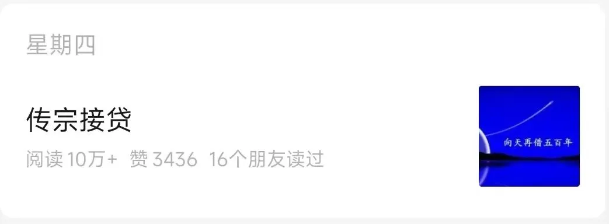
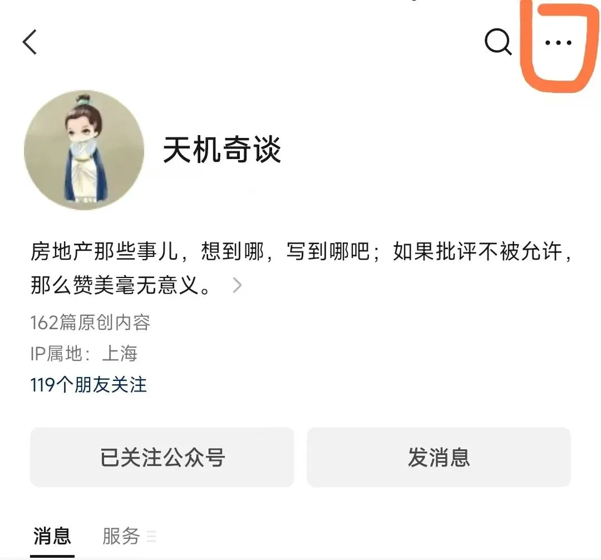
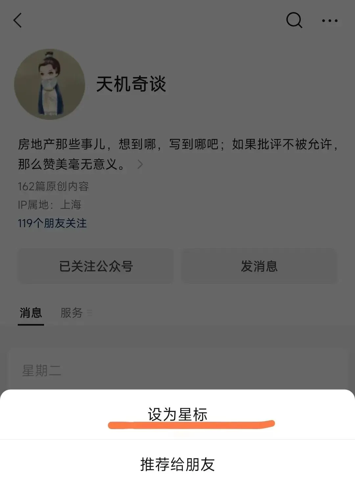
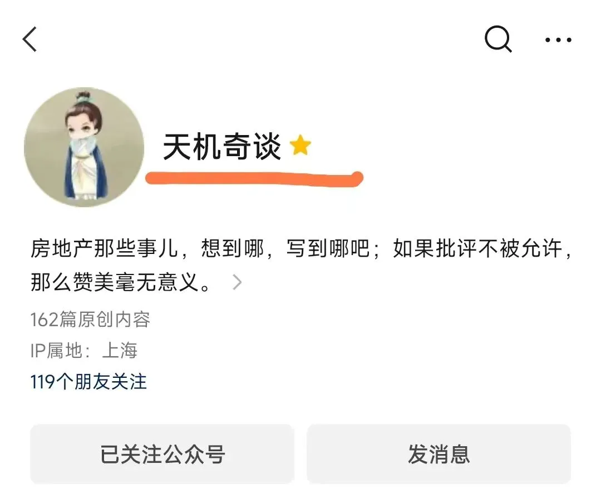

事态开始严重了
本地阅读 · 正文与留言保留原文
2月初，公众号进行了一次改版。
改版后，几次更新文章，留言被反馈最多的问题分别是：
1、 没有收到公众号文章更新的信息 ；
2、 文章封面图变小导致看不清封面图的文字 ；
3、 系统推送的文章不是最新的，是几天前甚至几周前的 。
起初，我没有在意。随缘嘛，大家能凑一块唠嗑唠嗑，就很好了。
直到这个问题被屡次提起，才发现，事态开始严重了：
在回答了近百次这个问题后，影响到了我在正常互动和内容创作上的表达欲。
为了解决这个问题，先后请教了腾讯的一位产品经理和几位公众号大V，目前有个有效的解决方式：
将公众号星标 。
星标公众号后，更新能及时收到，封面图会变大，推送的文章一般是最新的。封面图会由图一变成图二：

说到底，新规则是根据你的行为来判定是否是公众号的常读用户（或喜欢），常读用户和喜欢的用户，能及时收到最新的推送文章，封面图也是大幅的。
除了文章末尾经常点“赞”和“在看”，星标公众号，也是体现喜欢的方式之一。
具体的操作流程如下：
1、点击下方公众号卡片；
2、点击公众号卡片后，会进入一个界面，界面的右上角，有个“ ··· ”的标识：

3、点击界面右上角的“ ··· ”，会弹出一个新的界面，新界面的第一个选项，就是“ 设为星标 ”：

4、点击这个“设为星标”，就完成操作了，操作完成后，公众号名称“天机奇谈”后，会多一个⭐的标识：

到这里，就成功星标公众号，可以经常按时收到公众号的文章推送，看清封面图的文字了。
就这样吧，明天见。
按日期浏览全部来源（同日按条目标识排序）
查看原始网页 ↗（需联网）保存于 2026-10-04
回到页首 ↑